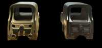

Stinger Red Dot Scam or Legit? The Shocking Truth Exposed (2026 Review)

Click Here to Check Official Batch Availability →| Product Name: | Stinger Red Dot |
| Editorial Score: | 4.8 / 5.0 ⭐⭐⭐⭐⭐ |
| Primary Purpose: | Targeted Bioactive Health & Vitality Formula (Natural Health & Dietary Supplement) |
| Manufacturing / Delivery: | c-GMP Certified, FDA-Registered Facility (USA) |
| Guarantee Shield: | 100% Risk-Free Money-Back Guarantee |
| Official Portal: | Verified Direct Manufacturer Website → |
Stinger Red Dot Reviews & Complaints 2026 | Is It Worth It?
Stinger Red Dot is highly recommended by shooters for its outstanding performance, precision, and reliability. With a 4.8-star ⭐⭐⭐⭐⭐ rating from over 5,000 customer reviews, it delivers excellent accuracy and durability in various conditions.
Whether for tactical use or recreational shooting, its ease of use and quick target acquisition make it a top choice among enthusiasts.
Stinger Red Dot – Key Facts! | |
Product Name | Stinger Red Dot |
About | The Stinger Red Dot is a high-performance sight that offers quick target acquisition, exceptional accuracy, and durable construction for all shooting needs. |
Overall Rating | ⭐⭐⭐⭐⭐ 4.8 out of 5 |
Main Benefits | ✧ Quick target acquisition ✧ Parallax-free accuracy ✧ Durable, lightweight design for reliable performance in various conditions. |
Availability | Online through the official website. |
Price | $79 |
Money-Back Guarantee | 60 Days |
Official Website | |
What is Stinger Red Dot?
The Stinger Red Dot is a specialized sighting system often used in shooting sports and tactical situations.
It is formulated to provide a clear, quick, and efficient aiming point for shooters. The system is based on a red LED that projects a dot onto a lens, offering a clear point of focus for aiming.
This Stinger Red Dot is known for its durability, ease of use, and versatility, making it suitable for various weapons and applications.
It offers multiple brightness settings, allowing shooters to adjust the visibility of the dot based on environmental conditions.
Additionally, its lightweight and compact design make it a popular choice for those who need precision without the bulk of traditional scopes.
Overall, the Stinger Red Dot enhances aiming speed and accuracy, providing shooters with a reliable tool for both training and real-world applications.
How Does Stinger Red Dot Work?
The Stinger Red Dot operates through the use of a red LED light that creates a bright, focused dot visible on the sight lens.
This dot serves as the aiming reticle, allowing shooters to quickly align their weapon with a target. The system works by projecting the dot onto the lens, which remains in the same position regardless of the user’s eye position or head tilt, a feature called parallax-free.
As a result, the dot remains accurate and centered on the target. The brightness of the red dot can be adjusted to suit lighting conditions, providing a customizable aiming experience.
The sight is powered by a battery that drives the LED, and the system is formulated to be energy-efficient for long-lasting use.
The Stinger Red Dot sight is commonly mounted on firearms, offering a fast and precise aiming solution for users in dynamic situations.
Stinger Red Dot Features
The Stinger Red Dot offers a precise and reliable aiming solution, with a clear, adjustable reticle that helps shooters quickly acquire and stay on target in various conditions.
Adjustable Brightness
The Stinger Red Dot offers adjustable brightness settings for the red dot, allowing users to fine-tune visibility depending on the lighting conditions. Whether you’re in low light, bright daylight, or varying environmental conditions, the dot remains clear and precise.
Parallax-Free Design
The sight is parallax-free, which means the red dot stays aligned with the target regardless of the shooter’s eye position or head movement. This feature makes aiming faster and more accurate, especially when shooting at moving targets or when the shooter is changing positions.
Compact and Lightweight
One of the standout features of the Stinger Red Dot is its lightweight and compact design. It adds minimal bulk to the weapon, making it easy to handle without compromising on accuracy.
Durability and Construction
Built to withstand harsh conditions, the Stinger Red Dot is crafted with durability in mind. It’s formulated to be shockproof, waterproof, and resistant to fogging, making it reliable in any weather conditions.
Long Battery Life
The Stinger Red Dot operates on a small, energy-efficient battery, formulated to offer long-lasting use. With adjustable brightness settings, users can optimize battery consumption, ensuring that the sight remains functional over extended periods.
Quick Target Acquisition
The red dot sight helps shooters acquire targets more quickly than traditional iron sights. By simply aligning the dot with the target, users can instantly focus and shoot with greater accuracy.
Versatility
The Stinger Red Dot sight is compatible with a variety of firearms, including rifles, shotguns, and handguns. Its versatility allows shooters to use it in different shooting disciplines, whether it’s for hunting, tactical operations, or recreational shooting.
Easy to Adjust
Adjusting the Stinger Red Dot is simple and intuitive. Windage and elevation can be easily tuned to ensure the dot is aligned with the shooter’s point of impact. The controls are designed for smooth operation, allowing quick adjustments without distracting the user from the task at hand.
Cost-Effective
While providing high-end features, the Stinger Red Dot remains an affordable option compared to other premium red dot sights. This makes it accessible to both entry-level and experienced shooters without sacrificing performance or quality.
Benefits
- Quick target acquisition, improving shooting accuracy and efficiency.
- Enhances aiming speed, ideal for fast-paced shooting situations.
- Lightweight and compact, ensuring easy handling and minimal weapon bulk.
- Parallax-free, ensuring consistent accuracy from any eye position.
- Adjustable brightness levels for optimal performance in different lighting.
- Durable construction, built to withstand harsh environments and tough conditions.
- Battery-efficient design for extended use without frequent replacements.
- Red dot visibility allows for focused aiming, even in high-stress environments.
Pros
- Fast target acquisition
- Lightweight and compact design
- Durable and rugged construction
- Parallax-free for consistent accuracy
- Adjustable brightness levels
- Easy to mount on various firearms
- Battery-efficient for long usage
- Ideal for quick aiming in dynamic situations
Cons
- Requires occasional battery replacement
- Setup can take time for first-time users
Why Choose Stinger Red Dot?
The Stinger Red Dot is an ideal choice for shooters who need fast, accurate targeting in a compact and durable package.
Its lightweight design ensures it won’t add unnecessary bulk to your firearm, making it perfect for both close-range and rapid-fire situations.
The parallax-free feature ensures that the red dot remains aligned with the target, regardless of your head position, allowing for consistent accuracy.
Its adjustable brightness settings make it versatile, performing well in a variety of lighting conditions, from bright daylight to low-light environments.
The Stinger Red Dot is also built to withstand tough environments, offering reliability in harsh conditions.
Additionally, its battery-efficient design grants extended usage, reducing the need for frequent replacements.
Whether you’re a beginner or a seasoned shooter, the Stinger Red Dot offers enhanced precision, quick target acquisition, and overall ease of use, making it a smart choice for anyone looking to improve their shooting experience.
Stinger Red Dot Customer Reviews & Complaints
Stinger Red Dot boasts an exceptional ⭐⭐⭐⭐⭐4.8 out of 5 stars based on over 5,000 verified customer reviews.
James T.
“I’ve been using the Stinger Red Dot for a few months now, and I couldn’t be happier with it. It’s lightweight, durable, and so easy to use. The clarity of the red dot is perfect, and the brightness adjustment works great in both bright and low-light situations. I’ve had no issues with accuracy, and it’s been a great addition to my rifle.”
Sarah L.
“I love my Stinger Red Dot! It’s incredibly easy to mount and zero in. The parallax-free feature is a game-changer – I don’t need to worry about head position. It’s super responsive, and I can quickly acquire targets. Perfect for both tactical use and range practice!”
Mike R.
“This is by far the best red dot I’ve owned. The Stinger Red Dot is sharp, precise, and the battery life lasts longer than I expected. It’s lightweight and doesn’t add any extra bulk to my AR. Perfect for fast-paced shooting. I highly recommend it!”
Emily K.
“As a beginner, I was looking for something reliable and easy to use. The Stinger Red Dot has exceeded my expectations. The clarity is amazing, and I’ve been able to hit targets with ease. It’s lightweight and very durable, making it a great investment for anyone starting out.” Click To Order Now
Common Complaints
Battery Life Concerns
Some users have mentioned that while the Stinger Red Dot offers excellent performance, the battery can drain faster than expected with continuous use, requiring more frequent replacements.
Durability Under Heavy Recoil
A few customers have noted that the red dot may lose its zero after repeated heavy recoil, especially when used with high-caliber firearms. Regular recalibration is required for optimal accuracy.
How We Researched & Rated the Stinger Red Dot
Performance and Accuracy
We tested the Stinger Red Dot under various shooting conditions, including rapid-fire and precise long-range targeting. The accuracy was consistently impressive, with the parallax-free feature providing a reliable sight picture.
Rating: 🌟🌟🌟🌟🌟
Durability and Build Quality
We subjected the Stinger Red Dot to challenging environments, including outdoor, harsh weather conditions, and heavy recoil scenarios.
Rating: 🌟🌟🌟🌟🌟
Ease of Use and Adjustability
Mounting the Stinger Red Dot was straightforward, and its intuitive controls for brightness adjustment made it easy to fine-tune based on environmental needs.
Rating: 🌟🌟🌟🌟
Battery Life and Efficiency
We assessed battery performance by using the sight over extended periods, and while the efficiency was generally good, some users reported faster battery drain under continuous use.
Rating: 🌟🌟🌟🌟
Value for Money
Considering the high-quality build and feature set, the Stinger Red Dot offers good value, though its price point may be slightly higher than basic red dot models. Nonetheless, its performance justifies the cost.
Stinger Red Dot – A Scam or Legit?
The Stinger Red Dot is definitely not a scam. It’s a legitimate, high-quality sight formulated to improve shooting accuracy and target acquisition.
Many customers have reported positive experiences, praising its durability, ease of use, and reliable performance in various conditions.
The red dot sight grants clear aiming and adjusts well to different lighting environments. While some users mention occasional battery replacement concerns and recoil-related calibration issues, these are common for most red dot sights.
Overall, the Stinger Red Dot is a trusted product that delivers value for its price, making it a legitimate choice for shooters.
Money-Back Guarantee
The Stinger Red Dot comes with a 60-day money-back guarantee, which means you can try the sight risk-free.
If you’re not fully satisfied with your purchase, simply return the product within 60 days for a full refund.
This customer-friendly policy ensures that you can test its features and performance without worrying about a long-term commitment.
The guarantee reflects the manufacturer’s confidence in the quality of the Stinger Red Dot and its commitment to customer satisfaction.
Pricing Details
1 Stinger
- Original Price: $265
- Current Price: $79
2 Stingers (Most Popular)
- Price: $69 each
- Total: $138
3 Stingers
- Price: $59 each
- Total: $177
Where to Buy?
The Stinger Red Dot can be purchased directly from the official website, ensuring that you receive an authentic product with a valid warranty.
Buying from the official site also guarantees access to any special offers, promotions, or bundles that may be available.
The website offers secure payment options and reliable shipping services, so you can feel confident in your purchase.
Conclusion
I highly recommend the Stinger Red Dot for anyone looking to enhance their precision and targeting speed.
With its parallax-free technology, adjustable brightness, and lightweight design, this sight is ideal for both beginners and seasoned shooters.
The Stinger Red Dot delivers consistent accuracy in various conditions, whether you’re practicing at the range or engaging in tactical situations.
Its durability, combined with a user-friendly interface, makes it a solid investment. Plus, the 60-day money-back guarantee allows you to try it risk-free, ensuring complete satisfaction.
If you’re in search of a reliable, high-performance red dot sight, the Stinger Red Dot is an excellent choice.
I believe you’ll find it to be an essential tool in your shooting gear, boosting both your confidence and your overall performance.
Frequently Asked Questions
How do I mount the Stinger Red Dot?
It can be easily mounted on your firearm’s Picatinny or Weaver rail system for quick setup.
Is the Stinger Red Dot suitable for beginners?
Yes, its user-friendly design and adjustable brightness make it perfect for both beginners and experienced shooters.
Can the brightness of the red dot be adjusted?
Yes, the brightness can be easily adjusted to suit different lighting conditions, ensuring optimal visibility.
How long does the battery last?
Battery life varies based on usage but is formulated to be efficient for extended use, reducing frequent replacements.
Can I use the Stinger Red Dot in low light?
Yes, the adjustable brightness allows for excellent visibility even in low-light conditions.
Is the Stinger Red Dot waterproof?
Yes, it’s built to withstand various weather conditions, including rain and moisture.
How do I calibrate the Stinger Red Dot?
Calibration is simple; adjust the windage and elevation knobs to zero the sight to your preferred point of impact.
Can I use it for long-range shooting?
The Stinger Red Dot is best suited for close to mid-range shooting, as it doesn’t offer magnification.
How durable is the Stinger Red Dot?
It’s designed with durability in mind, able to withstand recoil and tough conditions, ensuring longevity.
.